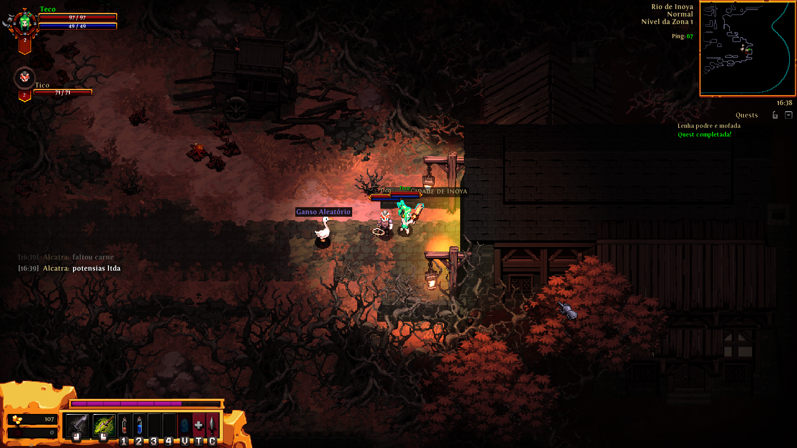
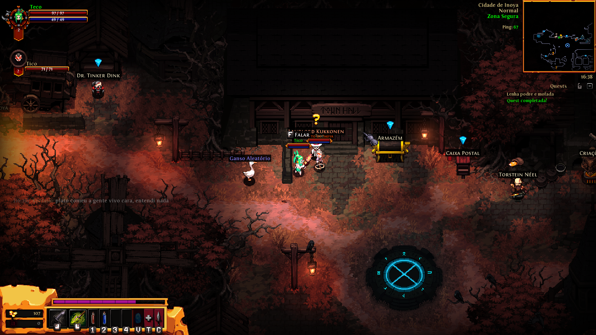
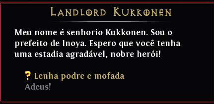

Ao iniciar sua jornada em Hero Siege, você começa em um mapa aberto repleto de inimigos. O objetivo inicial é limpar essa área, concluir as quests e encontrar o caminho até a cidade principal, que será sua base para comprar itens, melhorar equipamentos e avançar na campanha.
Quest 1: Habilidades e Atributos

A cada nível conquistado, seu herói recebe 4 pontos de atributos e 1 ponto de habilidade. Distribuir esses pontos corretamente é essencial para sobreviver e avançar no jogo. Para realizar as atribuições é necessário abrir o menu de habilidades, pode ser feito apertando a tecla "T" no teclado.

- Priorize atributos que combinam com sua classe.
- Use o ponto de habilidade para desbloquear ou melhorar habilidades principais.
- Confira a barra de habilidades e inventário para aplicar os pontos de forma estratégica.


Quest 2: Chaves e Baús

Durante o mapa inicial, você encontrará baús especiais que requerem chaves para serem abertos.
 Eles contêm itens raros, moedas extras e equipamentos poderosos.
Eles contêm itens raros, moedas extras e equipamentos poderosos.

Ao iniciar a missão, você receberá uma chave que deve ser usada em um baú localizado na parte superior do mapa.

Abrindo o baú, você acessa os itens contidos nele. A nova chave recebida será armazenada na seção de chaveiros do inventário, podendo ser usada em outros baús especiais que encontrar pelo mapa.

Após abrir o baú, você retorna ao local inicial da missão, se preparando para explorar novas áreas do mapa. Durante esse processo, você recebe a recompensa final da missão, consolidando seu progresso e fortalecendo seu herói.

Quest 3: Pulos de Coelho

Pular é uma habilidade essencial para escapar de inimigos ou alcançar áreas inacessíveis. Dominar o pulo permite explorar melhor o mapa e encontrar itens escondidos.

- Use o pulo para atravessar obstáculos, como buracos ou paredes baixas.
- Alguns segredos ou itens raros só podem ser alcançados pulando em pontos estratégicos.


Quest 4: Lenha Podre e Mofada

Nesta fase, você enfrentará um inimigo muito mais poderoso do que os anteriores. Derrotá-lo é essencial para desbloquear o avanço no mapa e concluir a primeira parte da jornada.

Ao seguir para a parte superior do mapa, atravesse o celeiro e derrote os inimigos que guardam a área. Após vencer esses desafios, uma árvore gigante surgirá e será necessário derrotá-la para prosseguir.

Superado o obstáculo, avance pela trilha, eliminando inimigos menores até alcançar a entrada da cidade principal, a Inoia.

Ao chegar, logo no inicio da cidade, entregue a missão ao prefeito da cidade, um NPC fixo que eventualmente oferece recompensas valiosas.

Concluindo a missão, seu personagem deverá alcançar o nível 3, requisito importante para explorar o próximo mapa, onde os inimigos serão ainda mais fortes.
